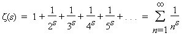

The Riemann Hypothesis
By Chris Caldwell
Summary:
When studying the distribution of prime numbers Riemann extended Euler's zeta function (defined just for s with real part greater than one) to the entire complex plane (sans simple pole at s = 1). Riemann noted that his zeta function had trivial zeros at -2, -4, -6, ...; that all nontrivial zeros were symmetric about the line Re(s) = 1/2; and that the few he calculated were on that line. The Riemann hypothesis is that all nontrivial zeros are on this line. Proving the Riemann Hypothesis would allow us to greatly sharpen many number theoretical results. For example, in 1901 von Koch showed that the Riemann hypothesis is equivalent to:But it would not make factoring any easier! There are a couple standard ways to generalize the Riemann hypothesis.
1. The Riemann Hypothesis:
Euler studied the sum
 (s) is the well-known extension of
the factorial function (
(s) is the well-known extension of
the factorial function (The Riemann zeta function has the trivial zeros at -2, -4, -6,
... (the poles of (s/2)). Using the Euler product
(with the functional equation) it is easy to show that all the other
zeros are in the critical strip of non-real complex numbers with
0 < Re(s) < 1, and that they are symmetric
about the critical
line Re(s)=1/2. The unproved Riemann hypothesis is
that all of the nontrivial zeros are actually on the critical line.
In 1986 it was shown that the first 1,500,000,001 nontrivial zeros of the Riemann zeta function do indeed have real part one-half [VTW86]. Hardy proved in 1915 that an infinite number of the zeros do occur on the critical line and in 1989 Conrey showed that over 40% of the zeros in the critical strip are on the critical line [Conrey89]. However, there is still a chance that the Riemann hypothesis is false. From August of 2001 through 2005, Sebastian Wedeniwski ran ZetaGrid which verified that the first 100 billion zeros were on the critical line.
2. Who cares?
In 1900 Hilbert listed proving or disproving this hypothesis as one of the most important unsolved problems confronting modern mathematics and it is central to understanding the overall distribution of the primes. When Hadamard and de la Vallee Poussin proved the prime number theorem, they actually showed

for some positive constant a, and they did this by bounding the real part of the zeros in the critical strip away from 0 and 1. The error term is directly dependent on what was known about the zero-free region within the critical strip. As our knowledge of the size of this region increases, the error term decreases. In fact, in 1901 von Koch showed that the Riemann hypothesis is equivalent to
There are many results like this, see, for example [BS96].
Generalizations of RH
Recall again our starting point from Euler:
Why should the numerators all be one? One important way to alter the series is to replace the numerators with functions χ(n) called Dirichlet characters (these can be viewed as functions for which there exists a positive integer k with χ(n + k) = χ(n) for all n, and with χ(n) = 0 whenever gcd(n, k) > 1). The resulting infinite sum L(?,s) is a Dirichlet L-function. Once again we analytically continue the function to one that is meromophic on the entire complex plane. The extended Riemann Hypothesis is that for every Dirichlet character χ and the zeros L(χ,s) = 0 with 0 < Re(s) < 1, have real part 1/2. The distributions of the zeros of these L-functions are closely related to the number of primes in arithmetic progressions with a fixed difference k. Should the extended Riemann Hypothesis be proven, then Miller's test would provide an efficient primality proof for general numbers. See, for example, [BS96 8.5-6].
Another way to generalize Euler's sum is to leave the field of rational numbers, and replace the denominators with the norms of the non-zero ideals (special sets of elements) in a finite field extention of the rationals K (called a number field). The resulting sum is the Dedekind zeta-function of K and can again be analytically continued. These zeta functions also have a simple pole at zero and infinitely many zero in the critical region. The generalized Riemann Hypothesis is again that the zeros in the critical region all have real part 1/2. See, for example, [BS96 8.7].